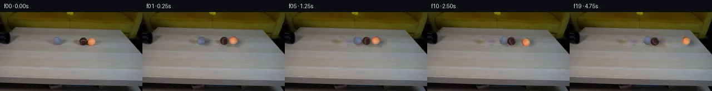

![首帧]()

Round 00
2026-11-05T12:09:31.240760+00:00像素候选变化代码 +215/−0inspection 更新
pixels 82fb78c742c34db5 · code 9dd82f8b17a56dd8
查看本轮 generate.py 真实 diff
--- previous/generate.py
+++ current/generate.py
@@ -0,0 +1,215 @@
+"""PixelWorld case_0029: grey tennis ball rolls out of the black pipe and
+hits the brown ball, knocking the orange ball away.
+
+Method (local pixel operations only):
+ * quadratic per-channel surface fit to the wood table;
+ * ball+shadow footprints removed with cv2.inpaint (Telea), correlated
+ grain re-injected in the fill, giving one static clean background;
+ * soft disc sprites (RGB + alpha) sampled from frame 0, unpremultiplied
+ against the fitted background;
+ * substepped 1-D equal-mass collision chain (restitution 0.75);
+ * per-frame analytic soft shadows and rotated/sub-pixel composited
+ sprites. Frame 00 is the untouched first_frame.png.
+"""
+from pathlib import Path
+import numpy as np
+import cv2
+from PIL import Image
+from artifact_io import save as save_artifacts
+
+ROOT = Path(__file__).parent
+TMP = ROOT / ".tmp"
+TMP.mkdir(exist_ok=True)
+
+rng = np.random.default_rng(29)
+
+# ---------------------------------------------------------------- geometry
+FRAME0 = np.array(Image.open(ROOT / "first_frame.png").convert("RGB"))
+H, W, _ = FRAME0.shape
+assert (H, W) == (144, 256)
+
+# measured circle centres (see OBSERVATION.md)
+CENTERS0 = np.array([[103.0, 52.7], [149.3, 53.9], [164.6, 54.1]]) # grey,brown,orange
+NAMES = ["grey", "brown", "orange"]
+R_COLL = 6.9 # collision radius
+R_IN, R_OUT = 6.6, 7.9 # sprite alpha disc (solid, feathered edge)
+V0 = 5.5 # grey launch speed, px / frame (0.25 s)
+DECEL = 0.04 # rolling deceleration, px / frame^2
+REST = 0.75 # coefficient of restitution
+
+# ----------------------------------------------------- background surface
+def fit_table_surface(img):
+ """Per-channel quadratic surface fitted on clean table pixels."""
+ R, G, B = (img[..., c].astype(np.float64) for c in range(3))
+ yy, xx = np.mgrid[0:H, 0:W]
+ zone = ((yy >= 40) & (yy <= 72) & (xx > 25) & (xx < 230)
+ & ~(((xx > 88) & (xx < 122)) | ((xx > 136) & (xx < 184))))
+ X, Y = xx[zone], yy[zone]
+ A = np.stack([np.ones_like(X), X, Y, X * X, Y * Y, X * Y], 1)
+ coef = np.empty((3, 6))
+ for c in range(3):
+ coef[c], *_ = np.linalg.lstsq(A, img[..., c][zone].astype(np.float64), rcond=None)
+ AA = np.stack([np.ones_like(xx), xx, yy, xx * xx, yy * yy, xx * yy], -1)
+ surface = np.stack([AA @ coef[c] for c in range(3)], -1)
+ return surface
+
+def build_background(img, surface):
+ """Inpaint ball + cast-shadow footprints, then re-inject wood grain."""
+ mask = np.zeros((H, W), np.uint8)
+ for cx, cy in CENTERS0:
+ cv2.circle(mask, (int(round(cx)), int(round(cy))), 10, 255, -1)
+ cv2.ellipse(mask, (int(round(cx + 6)), int(round(cy + 2))),
+ (12, 7), 0, 0, 360, 255, -1)
+ filled = cv2.inpaint(img, mask, 3, cv2.INPAINT_TELEA)
+ # correlated grain matching measured table residual sigma (R,G,B)
+ noise = rng.standard_normal((H, W, 3))
+ for c in range(3):
+ noise[..., c] = cv2.GaussianBlur(noise[..., c], (0, 0), sigmaX=3.0, sigmaY=1.1)
+ noise /= noise[mask > 0].std(0)
+ grain = noise * np.array([5.2, 6.5, 9.6])
+ bg = filled.astype(np.float64)
+ bg[mask > 0] = np.clip(bg[mask > 0] + grain[mask > 0], 0, 255)
+ return np.clip(bg, 0, 255).astype(np.uint8), mask
+
+# ---------------------------------------------------------------- sprites
+def extract_sprites(img, surface):
+ half = 10
+ g = np.arange(-half, half + 1)
+ jj, ii = np.meshgrid(g, g) # canonical pixel offsets from ball centre
+ sprites = []
+ f0 = img.astype(np.float64)
+ for (cx, cy), name in zip(CENTERS0, NAMES):
+ # bilinear sample of frame and fitted background in canonical window
+ xs = cx + ii
+ ys = cy + jj
+ obs = np.stack([cv2.remap(f0[..., c], xs.astype(np.float32), ys.astype(np.float32),
+ cv2.INTER_LINEAR, borderMode=cv2.BORDER_REFLECT)
+ for c in range(3)], -1)
… diff truncated; 128 more lines …